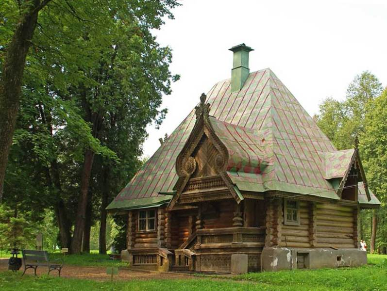

|  | Министерство культуры Российской Федерации Портал Культура.рф Проект «Образы России» |
Le musée-réserve naturel Abramtsevo
LE BAIN-MAISONNETTE

Le bain dénommé plus tard «Le bain-maisonnette» a été construit dans les années 1877–1878 selon le projet de l’architecte I.P. Ropette (le vrai prénom et nom Ivan Nikolaevitch Petrov, 1844–1908) sur la place du bain vétusté d’Aksakov et est un des monuments du «style russe». Le bain-maisonnette représente la maison des bois coupés avec le toit peint en quinconce à quatre versants. Le porche décoratif de la façade du sud est couronné du diadème en bois décorée en abondance des sculptures. De petite fenêtres aveugles sous le toit trop grand et une petite porte basse sous le support massif du porche rend le bain la vue surprenante pour laquelle il a reçu sa deuxième dénomination « maisonnette ». Pour sa destination principale le bain n’a été presque pas utilisé et servait de pavillon pour les invités. Ici dans les années 1910–1911 est restée la famille de P.P.Kontchalovskyi, dans les années 1920 – l’acteur de МKhaT А.L. vichnevskyi. A présent dans le bâtiment se trouve l’exposition consacrée à l’atelier de menuisier créée à l’initaitive de Е. G. Mamontova. Ici sont présentés les meubles et les objets ménagers fabriqués selon les croquis de Е.D. Polenova et d’autres artistes.